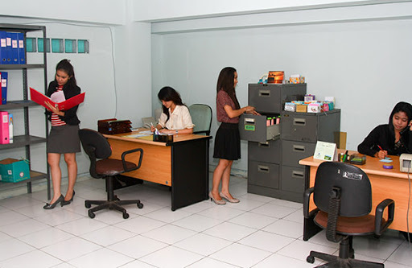
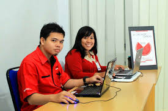

Apa Itu Jurusan OTKP?
Jurusan OTKP mempelajari segala jenis kegiatan kantor. Mulai dari pembukuan, pengarsipan,
hingga public relations. Mayoritas lulusannya bekerja di lingkungan perkantoran dengan peran
diantaranya menjaga kelancaran operasional kantor sehari-hari termasuk bertindak sebagai perantara
dari karyawan dan pimpinan perusahaan ataupun dengan pihak di luar kantor. Bagi para lulusan yang
berminat di bidang seni bisa bekerja di berbagai galeri, gedung pameran dan teater, mengatur kelancaran
operasional sehari-hari serta mengkoordinir acara-acara jika ada.
Kompetensi keahlian Otomatisasi dan Tata Kelola Perkantoran (OTKP) atau dulunya Administrasi
Perkantoran (AP) merupakan salah salah satu jurusan di Sekolah Menengah Kejuruan (SMK) Negeri 1
Tanah Grogot yang memberikan bekal tentang berbagai informasi layanan dibidang administrasi baik
secara pengetahuan, keterampilan, dan sikap dalam menyelesaikan pekerjaan-pekerjaan perusahaan
atau kantor.
Apa Yang Didapatkan Dari Jurusan OTKP?
Membekali lulusannya dengan kompetensi bidang administrasi kantor dan sekretaris untuk kebutuhan
dunia usaha antara lain :
- Prinsip-prinsip penyelenggaraan administrasi perkantoran
- Keterampilan dasar komunikasi serta mengoperasikan berbagai fasilitas kantor (telepon, mesin facsimile,
komputer dan peralatan presentasi, mesin hitung, LCD Proyektor dsb)
- Menerapkan prinsip-prinsip kerjasama dengan kolega dan pelanggan serta mampu menyelenggarakan
rapat/pertemuan bisnis
- Mengoperasikan berbagai aplikasi komputer untuk perkantoran (bentuk surat, pembuatan dokumen,
laporan dan presentasi)
- Menyusun berbagai jenis laporan perkantoran & mempresentasikannya serta mampu
menyelenggarakan sistem kearsipan
Peluang Atau Prospek Kerja OTKP?
1. Resepsionis
Peluang kerja pertama yang bisa dilakukan oleh lulusan administrasi perkantoran
adalah menjadi resepsionis, terlebih bagi Kamu yang memiliki kemampuan
berkomunikasi yang baik. Kamu bisa menjadi resepsionis hotel, perusahaan dan lain-
lain karena setiap perusahaan yang bergerak di bidang apapun pasti akan
membutuhkan posisi resepsionis untuk menjadi bagian front office perusahaan mereka. Tugas yang
dilaksanakan oleh resepsionis seperti: Menjembatani informasi antara manajemen perusahaan dan tamu,
Melayani tamu perusahaan yang berkunjung, Bersiap dan menunggu tamu di meja lobi perusahaan
2. Sekretaris

Prospek kerja berikutnya yang bisa dilakukan oleh jurusan administrasi perkantoran
adalah menjadi seorang sekretaris. Tugas utama seorang sekretaris ialah untuk
memfilter informasi yang berkaitan dengan bisnis perusahaan bagi pimpinan serta
menjadi media perekam, penyimpan, dan pengingat kegiatan atasan di perusahaan.
3. Staff Administrasi

Peluang kerja berikutnya yang bisa Kamu lakukan sebagai lulusan administrasi
perkantoran adalah menjadi staff administrasi. Tugas utama seorang staff administrasi
adalah untuk melakukan berbagai pelayanan kantor yang berkaitan dengan administrasi
untuk mendukung kelancaran operasional perusahaan. Secara umum, staff admnistrasi memiliki tugas
untuk melakukan merekap data, mengelola dokumen dan menyimpan hal tersebut dengan terorganisir.
Beberapa pekerjaan lain yang sesuai untuk Lulusan dari Kompetensi Keahlian Otomatisasi & Tata Kelola
Perkantoran antara lain :
- Sekretaris Junior
- Petugas Kearsipan
- Petugas Perpustakaan
- Operator Telepon
- Juru Ketik
- Personalia / HRD